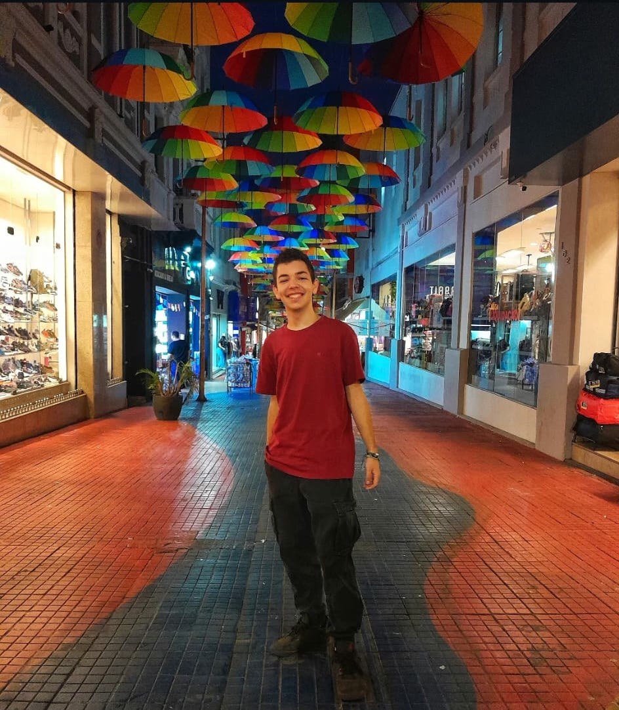
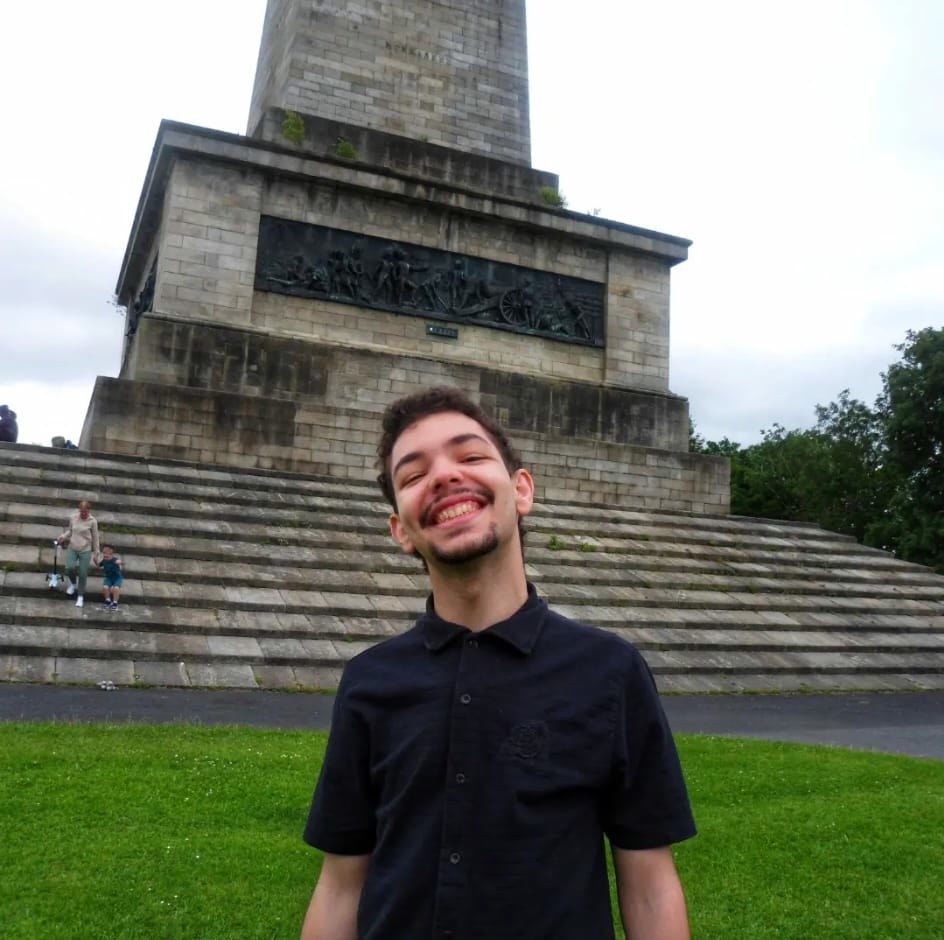
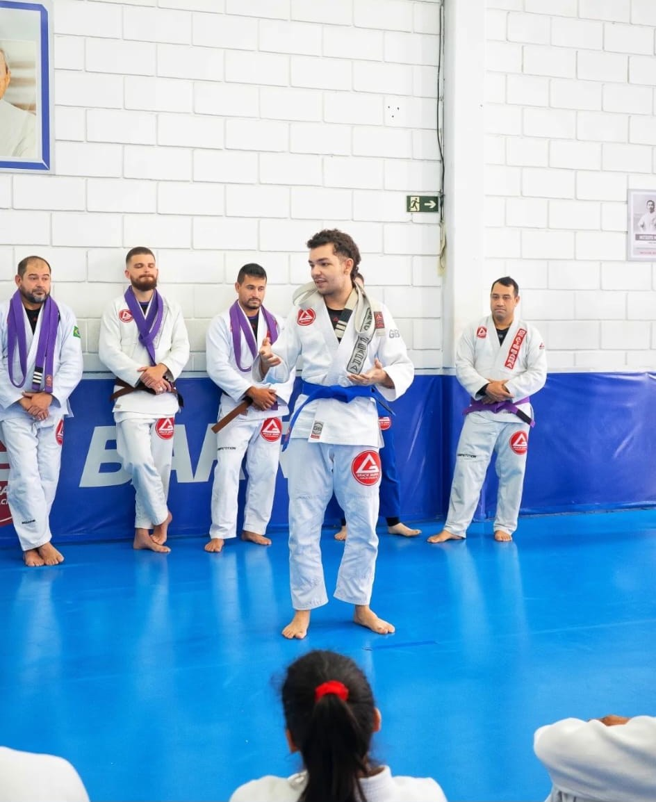
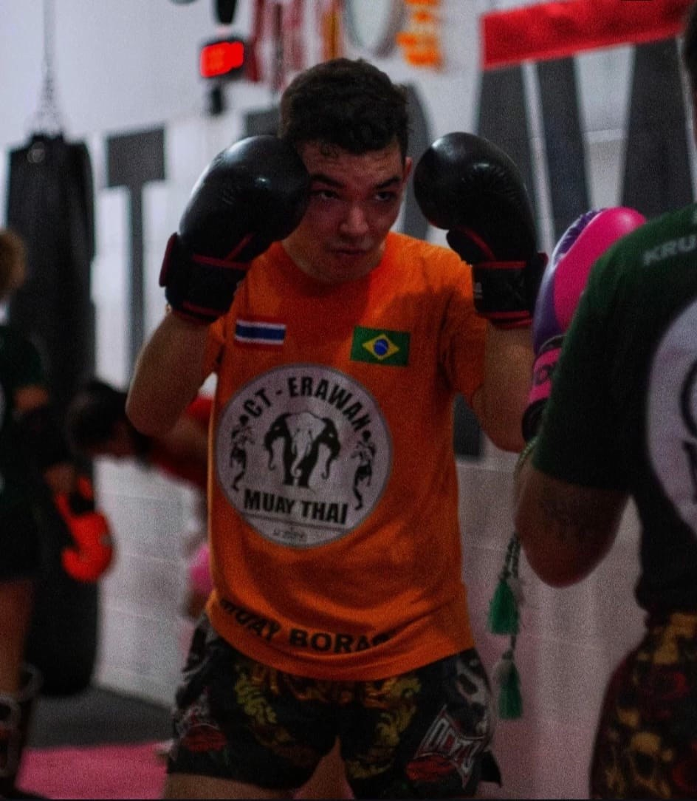
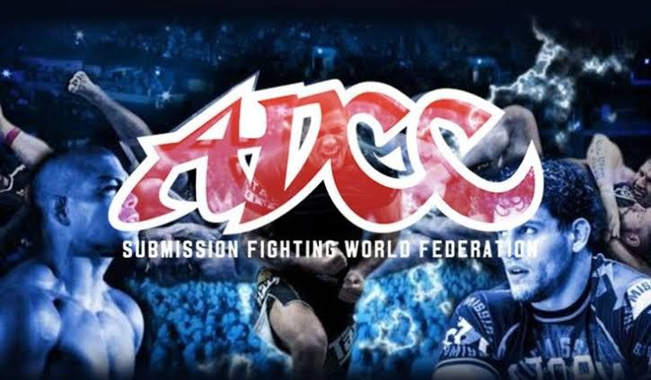

I — Brazil, before Ireland
Who I Was
Comfort was never the same as fulfilment.
I am Juan de Paula, and what follows is the account of a decision that reshaped my life.
I was born and raised in Brazil, a country I love without reservation, yet one whose financial instability and security concerns I could never fully make peace with. By the time I reached my late twenties, I had climbed to the peak of my career. My company was generating solid revenue, and by most measures, I was living comfortably. Rarely, however, does comfort alone answer the questions that matter most, and nowhere in that success could I picture the family I wanted to build one day.
Despite the figures looking fine on paper, my business had stopped moving forward. Little by little, that stagnation wore on me, and although I was never someone who lacked confidence, I came close to depression during that period. I carried a great many rough edges then, unresolved parts of my personality that Brazil's pace of life never forced me to confront.
So, I decided to leave. Only after years of turning the idea over in my mind did I finally act on it. First, I applied for a work visa in the United States, where a job was already waiting for me. It was denied. Then I tried Canada. Denied again. Not until Ireland opened its doors did the plan take proper shape, and looking back, rarely has a rejection redirected a life so precisely toward where it needed to go.

II — Ireland, now
Who I Am Now
Rarely have I felt as certain of who I am as I do now.
Ireland has given me more than a visa route and a fresh start. It has given me room to hone the edges I mentioned earlier, and slowly, it has made my personality more solid.
I was never an insecure person, but rarely have I felt as certain of who I am as I do now. Only through distance from everything familiar did I learn to set boundaries clearly and to define my goals without hesitation. Not only has my confidence grown, but my sense of direction has sharpened alongside it.
Professionally, the shift has been just as significant. Back in Brazil, my company was standing still. Here, it is close to taking off. What used to be a small, tired operation now employs more people than before, and for the first time in years, I feel genuinely stable, both financially and mentally. Seldom does a single decision change so much at once, yet leaving Brazil did exactly that.
None of this happened overnight, and I will not pretend the adjustment was effortless. New cities, new seasons, and rain that never quite stops all took some getting used to. Still, rarely have I regretted a decision less. Ireland gave me room to grow into a steadier version of myself, and I intend to keep building on that foundation.
III — The mat, becoming
Who I Want to Be
I fully intend to meet that version of myself again.

01 — The standard
Who I Was on the Mat
Before any of this, I trained hard: Brazilian jiu-jitsu, Muay Thai, grappling, competing whenever the calendar allowed. That version of myself, pictured here mid-promotion to blue belt, surrounded by training partners who pushed me forward, is a version I fully intend to meet again.

02 — Training now
Getting Back to 100
Not only do I want to return to that training schedule, but I want to surpass it. Somewhat leaner than I once was, having lost some muscle along the way, I am not currently at 100 percent condition. Soon, though, I intend to be.

03 — The goal
ADCC. The UFC. Seriously, This Time.
Beyond simply training, I want to compete again, not as an idle daydream but as a genuine target I am building toward, day by day, session by session. Only through consistent, uncompromising work will that level become reachable again.
At the same time, I want a stable base to compete from. Securing a long-term work visa matters to me for exactly that reason: not only for security, but as an anchor, a fixed point from which I can commit fully to both career and sport without constantly wondering what comes next.
IV — Spain / Germany, ahead
What I Want in Life
Looking further ahead, my plans extend beyond Ireland. Spain or Germany stands as the next chapter, a country where I hope to eventually earn citizenship and put down roots that last. Not only do I want a passport there, but I want a genuine, long-term home.
Once settled, my focus will narrow to what matters most: my career, my training, and eventually, my family. Only after building that foundation, professionally solid and physically strong, do I want to start one. Rarely does anyone get every piece to align perfectly, but that is the order I am working toward, deliberately and patiently.
This website marks a point along that path, not the destination. Brazil shaped me. Ireland is refining me. Whatever comes next, Spain, Germany, a title, a family, will be built on everything these years have already taught me.